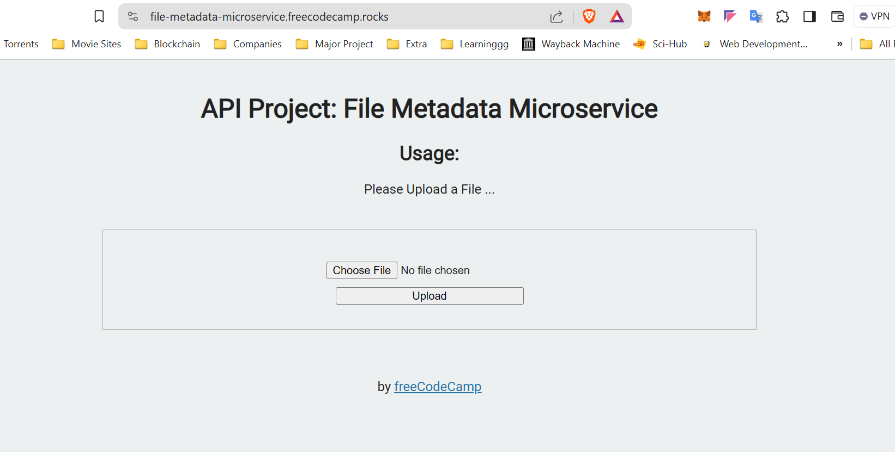

File Metadata Microservice
Tests- Waiting:You should provide your own project, not the example URL.
- Waiting:You can submit a form that includes a file upload.
- Waiting:The form file input field has the name attribute set to upfile.
- Waiting:When you submit a file, you receive the file name, type, and size in bytes within the JSON response.

CODE:
var express = require('express');
var cors = require('cors');
const multer = require('multer');
const upload = multer();
// const upload = multer({
// dest: 'uploads/'
// })
require('dotenv').config()
var app = express();
const bodyParser = require('body-parser');
app.use(bodyParser.urlencoded({
extended: true
}));
app.use(cors());
app.use('/public', express.static(process.cwd() + '/public'));
app.post('/api/fileanalyse', upload.single('upfile'), (req, res) => {
console.log(req.file);
// console.log(req.file.originalname);
// console.log(req.file.size);
// console.log(req.file.encoding);
var obj = {
name: req.file.originalname,
type: req.file.mimetype,
size: req.file.size
}
console.log(obj);
res.json(obj);
});
app.get('/', function(req, res) {
res.sendFile(process.cwd() + '/views/index.html');
});
const port = process.env.PORT || 3000;
app.listen(port, function() {
console.log('Your app is listening on port ' + port)
});